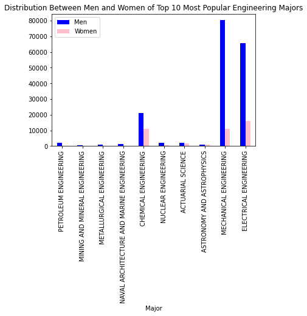

Marks
- The vote count bar above the map is a mark. This is an area mark as each vote total is given a portion of the total rectangle.
- Each state on the map is a mark. These are area marks as each state is shaped like the state in the real world.
- The electoral vote counts below the map are marks. These are point marks.
Channels
- Shape
- Represents sequential quantitative attribute of vote count
- This is a good choice as the side with more votes is larger than the side with less votes.
-
Position
- Represents categorical attribute of Democrat vs Republican
- The bar representing the Democrat vote total is placed on the left, while the bar representing the Republican vote total is placed on the right. This is a good choice as the Democratic Party is generally seen as left-wing while the Republican Party is seen as right-wing.
- Color
- Represents categorical attribute of Democrat vs Republican
- This is a good choice because the Democrat Party is traditionally colored blue and the Republican Party is traditionally colored red. So, these colors distinguish the two parties and the colors themselves make sense for each party.
Colormaps
- Categorical
- Represents attribute of Democrat vs Republican
- This is a good choice because the two political parties are different categories, and the colors used are representative of each political party and are distant from one another.
Marks
- Every datapoint in the visualization is a point mark.
Channels
- Position
- Left to right position indicates the sequential quantitative exit velocity attribute, and top to bottom position indicates the diverging quantitative launch angle attribute.
- This is a good choice because balls that were hit farther are to the right, as they have a higher exit velocity. Balls that are hit at a higher angle are located towards the top of the visualization.
- Color
- A stronger orange color means a hit of high scoring value, which a stronger purple color means a hit of low scoring value. Scoring value is a diverging quantitative attribute.
- This is a mostly good choice because the strong orange color conveys excitement and action, while the soft purple color conveys calm. One aspect of the coloring that I don't agree with is the white midpoint, as it is difficult to see against the soft gray backgound color of the visualization.
Colormaps
- Divergent
- An orange color means a hit of high scoring value, which a purple color means a hit of low scoring value. Scoring value is a diverging quantitative attribute.
- It was a good choice to use a divergent colormap here, as the midpoint color (white) indicates average, while points below average are purple and points above average are assigned orange. The two colors are used to show the two extremes of the range, making a divergent colormap a good choice.
Marks
- Each bar in the visualization is a one-dimensional line mark
Channels
- Position
- Represents attribute of type categorical for major and type ordinal sequential for the number of people
- This is a good mapping because we can accurately judge the stark contrast between the general amount of people between various majors
- Color
- Represents attribute of type categorical for the number of men and women within each major
- This is a good mapping because we can accurately judge the differences between the amount of men and women within each major.
Colormaps
- Categorical
- Represents attribute of type categorical, the two categories being men and women
- This is a good mapping because the colors are perceptually distinct and similar saturation